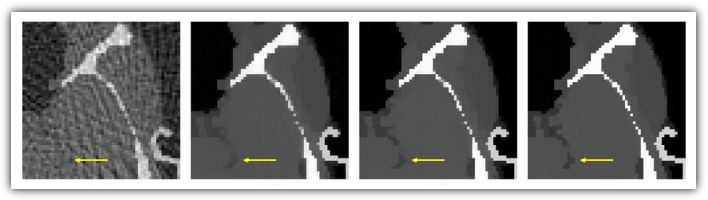

这周参加的 workshop 今天终于出现了一个非常有意思的 talk，讲演者是 UCSD 放射肿瘤学系教授 Steve Jiang。这篇文章的题目来自于芝加哥大学放射诊断学系教授 Xiaochuan Pan 的一篇论文（见附注）。
问题一目了然：近二十年来，X 光断层扫描成像技术在学术界的进展一日千里。但是今天医学实践中主流应用的还是二十五年前的 Filtered Back Projection 方法。翻开任何一篇今天关于断层扫描的论文，都能看到现代方法的结果比 FBP 方法好了不知道多少倍（我自己也写过这个领域的论文，确是如此，下图从左到右反映了不同年代的技术，而医疗上至今仍然在应用最左边的技术）。但是学术界的成果完全没有在业界反映出来。这是为什么呢？

这个问题的重要性可以通过下面的数据看出来。以美国为例，医疗放射剂量差不多占了于美国人身体所承受的全部辐射的三分之一，每年 CT 放射超过六千万人次（在中国这个数字当然更高）。另一方面，所有的现代 CT 研究都号称能够大幅降低对人体的辐射伤害。但是，今天去医院，我们遇到的仍然是高辐射低质量的过时技术，并且短期内看起来会一直是这样。这不仅是一个学术问题，而且是一个公共卫生安全问题。
Jiang 对此的回答是这是研究体系之间的矛盾所导致的。CT 技术的进展主要体现为数学工具的飞跃，而临床医生不懂数学，也看不懂数学论文，更不容易找到容易交流的数学家讨论。应用数学家满足于在刊物上发表论文（二十年间这个领域的论文何止千万），却不关心临床上存在的实际问题。即使双方偶有交流，也停留在个案上，完全不足以推动产业的改变。
从我自己的经验来看，这是相当切中肯綮的评论。从数学家的角度来看，一方面，甚至直到今天为止，很多数学家还满足于在一些过度简化的图像上（Shepp-Logan 就是个典型的例子）实验自己的数学模型，而完全不了解为什么这些模型会在实践中遇到巨大的困难。（反过来，这些过度简化的模型甚至恶化了医学界对数学工具的厌恶，认为它们都是纸上谈兵而已。我本人就遇到过此类相当不客气的评论。）
另一方面，大多数数学家并无机会接触到第一手的医疗数据（这里也的确存在医疗法规和隐私管理的问题），所以无从建立在实践层面上比较算法优劣性的平台。其结果就是大家鸡同鸭讲，自说自话。平心而论，今天这个领域 90% 的研究确实如此。
但是另一个困难更加本质：临床医疗业界普遍看不懂也不愿意看数学论文。这就要求一部分数学家承担起桥梁的职责，同医学界密切合作把数学工具引入临床实践，而这是个既困难又吃力不讨好的工作。数学家有自己评估学术成就的标准，而这种工作是无法被计入学术贡献的。（这里说的是美国的情形，在中国大概更糟。）
结论呢？这不是一人一事一时一地的问题，而是跨学科跨产业的问题。注意到这个问题的人确实越来越多了，但是要指望现实层面的变革，至少目前来看是不现实的。
参考文献：
Why do commercial CT scanners still employ traditional, filtered back-projection for image reconstruction?
Xiaochuan Pan, Emil Y Sidky and Michael Vannier
Inverse Problems Volume 25 Number 12

August 27th, 2011 20:13
问个inverse problem，您如何看待这个网站的观点
http://www.changhai.org/contents/science/physics/electron_orbit.html
现在能否从各种光谱，比如电磁波中的紫外，可见，红外等区域的吸收和发射，通过逆问题的方法推算原子分子所处的状态？
谢谢
August 27th, 2011 21:40
哈，我替木遥回答ls吧。
各种光谱分析技术已经成熟几十年了：IR， NMR， Raman，UV-VIs…这些都是最常见的分析手段，是化学分析实验室不可或缺的，广泛用在学院和工业界的实验室里。像连检验三聚氰胺这种事情也得靠它们。
August 27th, 2011 23:26
可是这些光谱的理论一般首先是假设一个分子结构，然后说这个结构有什么样的吸收/发射特征；然后认为这些运动模式在复杂分子中是可移植的，比如xxxx cm^-1的红外吸收对应了某种振动模式；或者直接对复杂分子进行量子力学计算，得到了某种运动模式。而不是用数学物理反问题的方式得到的，至少据我所知。希望楼上能够给出用数学物理反问题的方法处理分子光谱的明确文献
August 28th, 2011 00:46
steve jiang….当年我跟此人腐败过好几次，是个非常有趣的怪大叔。
August 28th, 2011 05:58
楼上的同学们说的事儿和引用的那个链接说的事儿，其实不太是一个事儿… 这个主要取决于你测量光谱的精度。按现在测量光谱的精度，路人甲提出的这些设想都还不具有实际操作意义。或者说，现在用高精度从头计算处理得到的光谱数据精确程度，其实已经超越了测量的极限了。
August 28th, 2011 09:12
@seren
对对，而且是你们四川老乡。
August 28th, 2011 12:07
据我所知，高精度从头计算得到的光谱精度并没有超过测量的极限，比如
http://cccbdb.nist.gov/default.htm
Data comparisons栏目里。虽然计算精度仍然有进一步提高的空间，但很难期待彻底改变这个判断。
August 28th, 2011 12:09
我指在现在的技术水平下，很难期待比nist里更高水平的计算方法能够超过测量的极限。
August 30th, 2011 00:23
让学院里搞理论的人做桥梁确实不太现实。感觉这部分应该由医疗器械公司的研发部门来做，或者独立出来成为一个产业。临床医疗业界不愿意读数学论文，那么做研究的基础医疗呢？
November 2nd, 2013 21:06
CT优化这个属于生命科学院的，国内就有搞这个的，虽然一直没什么成果，主要是算法，好多数学博士在搞。